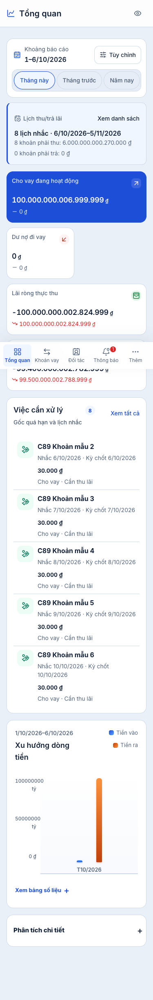

Ảnh trước và hướng sửa đề xuất
Ảnh render thật với dữ liệu giả. Bên “Đề xuất” chỉ áp CSS tạm vào cùng DOM local; chưa sửa code, chưa deploy. Không làm tròn hoặc bỏ chữ số.
Giao diện
Ảnh fullpage có thanh điều hướng cố định ở vị trí viewport đầu. Cuộn trong app sẽ đưa phần dưới lên; ảnh nối dài không chứng minh nội dung bị che khi cuộn.
375px · Sáng · cùng fixture trước/sau
Hai phát hiện cần xử lý
F1 · MEDIUM · Hỏng Đọc số tiền ở chi tiết khoản vay
CSS cho phép ngắt giữa chữ số; selector grid còn áp vào cả span số và ₫ ở số liệu phụ. Ngay cả “0 ₫” cũng tách dòng. Số liệu không đổi, nhưng cách trình bày dễ gây nhầm.
globals.css:839,849 · VndText:6 · phép đo theo từng dòng chữ, không chỉ overflow.
F2 · LOW · Lệch hệ Tab mobile chưa dùng hết chiều ngang
“Tổng quan” và “Các kỳ lãi” bị ép hai dòng ở375/390. Đề xuất dùng đủ ngang và giữ nhãn một dòng, target tối thiểu44px. Điều hướng vẫn hoạt động ở bản hiện tại.
globals.css:692 đối chiếu ui-primitives.css:59–61 · Evon detail P1/P2 hai theme.
Đọc báo cáo đầy đủ: file, nguyên nhân, tác động và giới hạn · Đối chiếu toàn bộ12 cảnh báo P
C90 · Chờ bạn phê duyệt
Chỉ sửa F1–F2. Giữ màu B, font, thứ tự KPI trên Việc cần xử lý và mọi số liệu authoritative. Không triển khai bốn đề xuất Gu; không đổi Auth, database hay nghiệp vụ; không push/deploy.
- Số0, số thường,17 chữ số, giá trị hợp lệ tối đa và số âm khi presentation cho phép: đủ chữ số, số +₫ cùng dòng, không clipping hoặc tràn ngang.
- 375/390/768/1024/1440 × Sáng/Tối: tab một dòng, đúng selected/keyboard/Back; target44px+, body và control dễ đọc.
- Privacy, drawer tự đóng/focus, draft/error/retry và query không hồi quy; gate hiện hữu đạt; DB test teardown0.
- Cập nhật tài liệu cùng thay đổi, báo bằng chứng rồi dừng trước checkpoint phát hành.
Minh họa đã đạt10 tổ hợp với khoản17 chữ số; C90 vẫn phải kiểm thêm phạm vi số hợp lệ và triển khai/test thật. Phê duyệt C90 không phải phê duyệt triển khai Production.
Giao diện B đã audit
Dùng lựa chọn Sáng/Tối ở phía trên. Tất cả ảnh đều synthetic. Loading được chụp390px, không phải mọi mạng/PWA cold-start.

Bốn đề xuất Gu · chưa chọn để sửa
G1: so sánh bảng mobile khi cột nhận diện chưa ghim. G2: nhãn phụ11.2–11.52px. G3: heading với tên200 ký tự. G4: màu hover và selected ở filter thông báo. Đây là lựa chọn cải thiện riêng, không tự đưa vào C90.
Chưa chứng nhận VoiceOver, mobile vật lý, Safari/Firefox authenticated, save remote, mạng/PWA trước HTML. Không yêu cầu bạn học VoiceOver để kết thúc audit này.